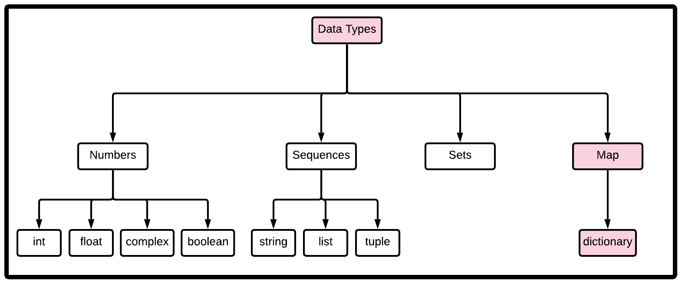

Background Info
Python Tuples: is a sequence datatype (lists is the other)that is immutable (can't be changed once its been created), and is used to group any number of items into a single compound value. The immutability of this sequence datatype differs from lists, which can be modified after they have been created.
Why is this important?
Python tuples are similar to what other computer science languages would call records (a chunk of related information), and their immutability is what makes them an invaluable datatype, for the following reasons.
- Iterating in a tuple is faster than a list.
- Tuples can contain a mix of datatypes, whereas lists are generally used to contain similar datatypes.
- Tuples are great for protecting data from changing.
Resources

Creating Tuples
To create a tuple:tuple_variable = ('a', ... , 'n')To create a tuple from existing tuples:
Option 1:
tuple_1 + tuple_2 Option 2:
tuple_1 * tuple_2 Option 3:
new_tuple[:] Option 4:
new_tuple * 1 Option 5:
new_tuple + ()
Packing and Unpacking Tuples
Python permits tuples to appear on the left of an assignment, and receive the corresponding value in the right side of the assignment operator.Example 1:
(a, b, c) = 10, 20, 30a = 10
b = 20
c = 30
Example 2: Enclosed parentheses are not required
a, b, c = 10, 20, 30a = 10
b = 20
c = 30
Example 3: Extended unpacking feature
z = (2, 4, 6, 8)a, b, *c = zprint(a, b, c)(2, 4, (6, 8))
Convert Between Lists and Tuples
To create a list from a tuple:list(tuple)To create a tuple from a list:
tuple(list)
Tuple Methods
Because tuple is immutable, many of the sequence methods available to lists are not available for tuples.There are only 2 tuple methods that tuple objects can call:
countindex